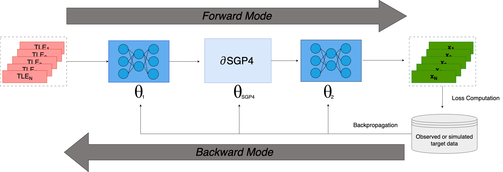

ML-dSGP4#
This tutorial introduces a hybrid model that uses neural networks to correct the input and outputs of dSGP4, to better match the precision of high-precision numerical integrators and/or simulated data.
For more details on what this entails and some discussion on the obtained results on <2,000 Starlink satellites, check out our publication: Acciarini, Giacomo, Atılım Güneş Baydin, and Dario Izzo. “Closing the Gap Between SGP4 and High-Precision Propagation via Differentiable Programming” (2024) Vol. 226(1), pages: 694-701.
The objective is to provide a way to improve the dSGP4 accuracy, when higher-precision simulated or observed data is available. This could also be a powerful tool for operators.
For this, we leverage the differentiablity of dSGP4 to backpropagate through inputs and outputs of the model.

Imports#
import dsgp4
import torch
import matplotlib.pyplot as plt
Load TLEs and ML-dSGP4 pre-trained model:#
#we load some TLEs, as usual:
tles = dsgp4.tle.load("example.tle")
#we load a pre-trained ML-dSGP4 model:
ml_dsgp4=dsgp4.mldsgp4(hidden_size=35)
ml_dsgp4.load_model(path='mldsgp4_example_model.pth',device='cpu')
üí° Note: the output is normalized, and the normalization constant can be defined through
normalization_Randnormalization_Vargumnets indsgp4.mldsgp4, if not defined, default will be used.
Prepare data#
#we now create a batch of TLE to later propagate it
tles_=[]
for tle in tles:
tles_+=[tle]*10000
tsinces = torch.cat([torch.linspace(0,24*60,10000)]*len(tles))
Batch TLE Propagation with ML-dSGP4#
#we use torch.no_grad() to avoid keeping track of the derivatives:
with torch.no_grad():
states_normalized_out=ml_dsgp4(tles_,tsinces)
states_normalized_out=states_normalized_out.detach().clone().numpy()
#if we want to unnormalize:
position=states_normalized_out[:,:3]*ml_dsgp4.normalization_R
velocity=states_normalized_out[:,3:]*ml_dsgp4.normalization_V
#let's plot it:
fig = plt.figure()
ax = fig.add_subplot(111, projection='3d')
ax.scatter(position[:,0], position[:,1], position[:,2])
ax.axis('equal');
Single TLE Propagation with ML-dSGP4#
#we use torch.no_grad() to avoid keeping track of the derivatives:
with torch.no_grad():
state_normalized_out=ml_dsgp4(tles_[0],tsinces)
state_normalized_out=state_normalized_out.detach().clone().numpy()
#if we want to unnormalize:
position=state_normalized_out[:,:3]*ml_dsgp4.normalization_R
velocity=state_normalized_out[:,3:]*ml_dsgp4.normalization_V
#let's plot it:
fig = plt.figure()
ax = fig.add_subplot(111, projection='3d')
ax.scatter(position[:,0], position[:,1], position[:,2])
ax.axis('equal');